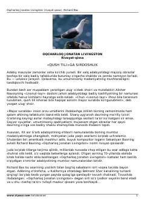

OJYuksak parvoz va erkinlikni ulug'lovchi mashhur falsafiy qissa.
Richard Baxning ushbu mashhur rivoyat-qissasi oddiy hayot tashvishlaridan ko'ra yuksak parvoz san'atini, ma'rifat va erkinlikni ulug'laydigan o'smirlar hamda kattalar uchun mumtoz asardir. Asar bosh qahramoni Oqcharloq Jonatanning o'ziga xos intilishlari va ruhni chiniqtirish yo'lidagi mashaqqatli mashqlari orqali insoniy komillikka da'vat etadi.